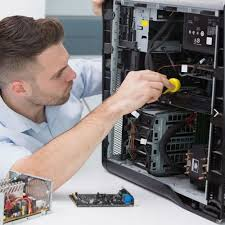

QuantumForge — это не просто компания, это команда единомышленников, влюблённых в мир высоких технологий. Мы объединились ради одной цели — делать компьютеры доступными, мощными и действительно подходящими под нужды каждого клиента. Наш опыт и страсть к технологиям позволяют нам создавать решения, которые не только соответствуют ожиданиям, но и превосходят их. Мы внимательно следим за новинками индустрии и постоянно развиваемся, чтобы предлагать только самые актуальные и передовые продукты.
Мы предлагаем готовые ПК на любой вкус и под любые задачи. Хотите погрузиться в мир современных игр с максимальной графикой и производительностью? Наши игровые компьютеры справятся даже с самыми требовательными проектами. Нужен стабильный и тихий офисный ПК для повседневной работы? У нас есть надёжные решения, оптимизированные под деловые задачи. А если вам нужен универсальный домашний компьютер для всего — от серфинга в интернете до просмотра фильмов и работы с документами — мы подберём именно то, что нужно.
Для тех, кто предпочитает собирать ПК самостоятельно, у нас есть огромный выбор комплектующих от проверенных брендов. Видеокарты, процессоры, оперативная память, SSD, блоки питания, корпуса и многое другое — всё в наличии и по выгодным ценам. Мы поможем не только с выбором деталей, но и с их совместимостью, а при необходимости — соберём всё под ключ. Обновить или собрать компьютер мечты стало проще и удобнее с нашей помощью.
QuantumForge — это не только техника, но и сервис, которому можно доверять. Мы сопровождаем клиентов на всех этапах: от консультации и подбора до сборки, настройки и последующего обслуживания. Наша цель — не просто продать компьютер, а стать вашим надёжным партнёром в мире цифровых решений. Мы стремимся к тому, чтобы каждый наш клиент чувствовал уверенность в своём выборе и получал удовольствие от работы с нами.
Телефон: +70000000000
Телеграм: @test
Почта: test@gmail.com